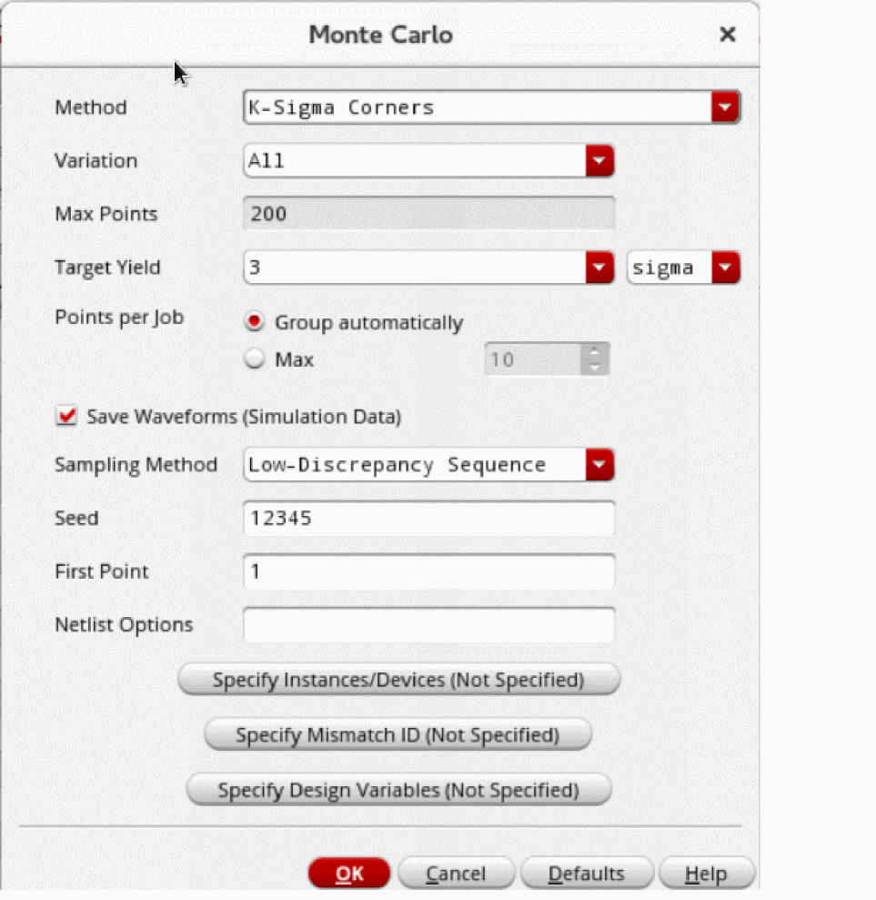

Running the K-Sigma Corners Method
Before you run the K-Sigma Corners method, ensure that the following environment variable is set to t:
envSetVal("maestro.monte" "showMethodKSigmaCorners" 'boolean t)
To create statistical corners using the K-Sigma Corners method:
- Open your design in ADE Assembler or ADE Explorer.
- From the Run Mode drop-down list, select Monte Carlo Sampling.
-
Click the Simulation Options command.
The Monte Carlo form opens.
 - From the Method drop-down list, select K-Sigma Corners.
- From the Variation drop-down list, select Mismatch, Process, or All.
-
The Max Points field shows the maximum number of points to be simulated.
This field is set to200points for the K-Sigma Corners method. - Select the Save Waveform (Simulation Data) check box to save the waveform data so that it can be used later for post-processing.
- From the Sampling Method drop-down list, select Random or Low-Discrepancy Sequence.
- Click OK to close the Monte Carlo form.
- Click Run Simulation to run the simulation.
The Run Log reports both the estimated K-Sigma value of the specification (based on the PDF) and the simulated value of the corner.
Example
When you run the K-Sigma Corners method with target yield set to 3 sigma, the MonteCarlo.N and its child histories are created for each specification as shown below.
The MonteCarlo.N history is created first and shows the general simulation data set for the simulation. Next, the simulation run proceeds to extract the statistical corners and a child history is created for each spec with run mode set to Worst-Case Corners.
After worst-case corners are created for all the specifications, the simulation creates 3-sigma statistical corners for each specification. These corners are displayed in the Data View assistant and the Corners Setup form:
The K-Sigma statistical corners are named as KSigma_specification_Name, where K is the specified sigma value. For example, the sigma value in this example is 3; therefore, the K-Sigma corner names are 3Sigma_specification_name.
You can view the details of statistical parameters that are used to create a K-Sigma corner by double-clicking the cell in the Design Variables row under the column for that corner in the Corners Setup form.
On the Results tab, two tabs are displayed at the bottom for this Monte Carlo simulation run—MonteCarlo.N and MonteCarlo.N.specification_name, where MonteCarlo.N is the history for the K-Sigma Corners run and MonteCarlo.N.specification_name is the child history for the Worst-Case Corners run for the last specification in the setup.
You can simulate the design over the generated statistical corner for further analysis or design tuning.
Related Topics
Workflow of the K-Sigma Corners Method
Return to top